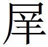

西周
鮑本 西周：漢志 ，河南、洛陽、穀城、平陰、偃師、鞏、緱氏，皆周地也。正曰：按大事記 ，周貞定王二十八年考王初立，封其弟揭於河南，是為河南桓公。河南即郟鄏。武王遷九鼎，周公營以為都，是為王城。洛陽，周公所營下都，以遷頑民，是為成周。平王東遷，定都王城。王子朝之亂，敬王徙都成周。至是考王以王城故地封桓公焉。平王東遷之後，所謂西周者，豐鎬也；東周者，東都也。威烈王以後，所謂西周者，河南也；東周者，洛陽也。何以稱河南為西周？自洛陽下都視王城，則在西也。何以稱洛陽為東周？自河南王城視下都，則在東也。河南桓公卒，子威公立。威公卒，子惠公立。考王十五年，河南惠公復自封其少子班於鞏以奉王，號東周，沒亦謚惠。是時東、西周雖未分治，河南惠公既號奉王者為東周，亦必自號西周矣。顯王二年，趙與韓分周為二，於是東西各為列國。顯王雖在東周，特建空名。是後史傳所載致伯賜胙之類，周王也。征伐謀策稱東、西周君者，皆謂二周也。周本紀云，赧王時，東、西周分治，非也。赧王特徙都西周耳，當以趙世家 為正（以上并大事記 文）。按高誘注，西周王城，今河南；東周成周，今洛陽。世本 云，西周桓公名揭，居河南；東周惠公名班，居洛陽。及索隱 、正義 所載甚詳。獨邵子經世書紀赧王為西周君與東周惠公並，而不紀西周公，仍舊誤也。鮑考之不精，即以西周為王，謂之正統，謂東不得先於西，亂易舊次，此開卷第一繆。近時陳振孫書錄，特舉其首西周為美，亦失考，所當改正從舊。又考春秋 ，書王城、成周。公羊傳 曰，王城者何？西周也；成周者何？東周也。說亦甚明。昭二十六年，天王入于成周。左傳 以十二月入王城，三十二年，城成周。蓋敬王定遷，在既城之後，而孫莘老、胡康侯皆以成周即京師，亦未考王城、成周之實，而誤合為一也。要之，此文古今說者，多以迷瞀致誤。故大事記 辨之甚詳，且實因鮑氏而發。近有著東西周辨 者，其說亦然，而不引呂子，豈未之見邪？徐廣云，周地亡，凡七縣，河南止緱氏。此是合東、西周地言之。今總注，蓋因正統之說而誤者。
薛公以齊為韓魏攻楚
薛公〔一〕 以齊為韓、魏攻楚〔二〕 ，又與韓、魏攻秦〔三〕 ，而藉兵乞食於西周〔四〕 。韓慶〔五〕 為西周〔六〕 謂薛公曰：「君以齊為韓、魏攻楚，九年而〔七〕 取宛、葉〔八〕 以北以〔九〕 強韓、魏，今又攻秦以益之〔一〇〕 。韓、魏南無楚憂，西無秦患，則地廣而益重〔一一〕 ，齊必輕矣〔一二〕 。夫本末更〔一三〕 盛，虛實有時〔一四〕 ，竊為君危之〔一五〕 。君不如令弊邑〔一六〕 陰合於〔一七〕 秦而君無攻〔一八〕 ，又無藉兵乞食〔一九〕 。君臨函谷而無攻〔二〇〕 ，令弊邑以君之情〔二一〕 謂秦王〔二二〕 曰：『薛公必〔二三〕 破秦以張〔二四〕 韓、魏，所以進兵者，欲王令楚割東國以與齊也〔二五〕 。』秦王出楚王以為和〔二六〕 ，君令弊邑以此忠〔二七〕 秦，秦得無破〔二八〕 ，而以楚之東國〔二九〕 自免也，必欲之。楚王出，必德齊〔三〇〕 ，齊得東國而益強〔三一〕 ，而薛世世無患。秦不大弱〔三二〕 ，而處之三晉之西〔三三〕 ，三晉必重齊〔三四〕 。」薛公曰：「善。」因令韓慶入秦，而使三國無攻秦，而使不藉兵乞食於西周。〔三五〕
〔一〕 姚本 薛，齊邑也。齊公子田嬰也，孟嘗君田文之父也。封於薛，號靖郭毛君，今屬魯國也。鮑本 靖郭君田嬰之子孟嘗君田文也。襲其父封薛。薛屬魯國。
〔二〕 鮑本 楚懷二十六年，齊、韓、魏攻楚，此十二年也。
〔三〕 鮑本 齊閔二十六年為韓、魏攻秦，此十七年也。正曰：此據史 。按通鑑 、大事記 ，赧王二年，當閔王元年。此當作十六年。
〔四〕 姚本 食，糧也。鮑本 藉，猶借。
〔五〕 姚本 韓慶，西周臣也。鮑本 凡韓皆韓人，其在周，去韓仕周也。凡非本國人，皆自其國求仕者也。
〔六〕 姚本續 ：史記 ，蘇代為西周。
〔七〕 鮑本 「年」下無「而」字。「九」字誤，當云「六」或「五」。
〔八〕 鮑本 二縣屬南陽。補曰：宛，於袁反，鄧州縣。葉，舒涉反，汝州縣。
〔九〕 鮑本 「以」作「為」。補曰：一本「而取宛、葉以北以強韓、魏」。札记 丕烈案：史記 作「以」，無「而」字。
〔一〇〕 姚本 益韓、魏之強也。鮑本 益其強。
〔一一〕 姚本 廣，多也。重，尊也。
〔一二〕 姚本 益韓、魏，韓、魏重而齊輕也。
〔一三〕 鮑本 更，猶迭。
〔一四〕 鮑本 言不可常。
〔一五〕 姚本 謂薛公。危，不安也。鮑本 并言齊、薛今雖善，韓、魏復或為患。
〔一六〕 鮑本 周也。
〔一七〕 姚本 陰，私也。鮑本 「於」作「為」。札记 丕烈案：史記 作「於」。
〔一八〕 姚本 無攻秦也。鮑本 但出兵臨秦，不用攻也。
〔一九〕 姚本 勿示秦以少兵少糧也。鮑本 勿示秦以弱。
〔二〇〕 姚本 臨，猶守也。函谷，關名也，在弘農城北，今在新安東。無攻秦。鮑本 臨，言以兵至其地。補曰：正義 云，陝州桃林縣西南有洪溜澗，古函谷也。今屬靈寶縣。
〔二一〕 鮑本 心所欲也。
〔二二〕 鮑本 昭襄。
〔二三〕 鮑本 「必」下補「不」字。補曰：史 ，下有「不」字，是。
〔二四〕 姚本 張，彊也。鮑本 張，去音，大之也。
〔二五〕 鮑本 「也」作「而」。補曰：史 作「而」。楚之東地，即楚策 「下東國」云。
〔二六〕 姚本 出，歸也。是時張儀誘楚懷王令召秦，秦使質之，故曰歸楚王以為和。鮑本 懷。楚懷三十年，張儀誘楚王會秦，秦留之。此十六年也。
〔二七〕 鮑本 「忠」作「患」。札记 今本「忠」作「惠」，鮑本作「患」。丕烈案：史記 作「惠」。
〔二八〕 鮑本 「破」作「攻」。秦得無攻，周之力也。札记 丕烈案：史記 作「破」。「破秦」，上文有。鮑改誤甚。
〔二九〕 姚本 楚東國，近齊南境者也。
〔三〇〕 鮑本 齊出之，齊之恩也。
〔三一〕 姚本 恩德齊，使得歸，楚王必以東國與齊也。
〔三二〕 鮑本 無三國之兵故。
〔三三〕 姚本 三晉，晉三卿韓氏、魏氏、趙氏分晉而君之，故曰三晉也。
〔三四〕 鮑本 秦居晉西，不弱而善齊，三晉畏秦，故齊重。
〔三五〕 鮑本 孟嘗傳 有。今按楚記 ，三國攻楚，秦救之，引去。與此言取宛、葉小駁。正曰：大事記 ，穎濱蘇氏云，秦昭王欺楚懷王，要之割地。諸侯孰視，無敢一言問秦者。惟田文怨秦，借楚為名，與韓、魏伐秦，自山東難秦，未有若此其壯者也。惜其聽蘇代之計，臨函谷而無攻，以求楚東國，而名義索然以盡。由此觀之，秦惟不遇桓、文之君，故橫行而莫之制，世豈有以大義而屈於不義者哉？「為強」、「為和」之「為」，如字，餘去聲。
秦攻魏將

武軍於伊闕秦攻魏將 武軍於伊闕〔一〕 ，進兵而攻周〔二〕 。為周最謂李兌〔三〕 曰：「君不如禁〔四〕 秦之攻周。趙之上計，莫如令秦、魏復戰〔五〕 。今秦攻周而得〔六〕 之，則眾必多傷矣。秦欲待〔七〕 周之得，必不攻魏；秦若攻周而不得，前有勝魏之勞，後有攻周之敗，又必不攻魏。今君禁之，而秦未與魏講〔八〕 也。而〔九〕 全趙令其止，必不敢不聽，是君卻〔一〇〕 秦而定周也。秦去周，必復攻魏，魏不能支〔一一〕 ，必因君而講〔一二〕 ，則君〔一三〕 重矣。若魏不講，而疾支之，是君存周而戰秦、魏也。重亦盡在趙。」
〔一〕 鮑本 唐志 ，為縣，屬河南。注，北有伊闕故關。此役秦昭十四年，此二十二年。補曰：正義 云，水經注 ，禹疏龍門以通水，兩山相對若闕，故謂之伊闕。今洛南猶謂之龍門也。諸本「犀」作「 」，當正。札记 丕烈案：「 」即「犀」別體耳。後策 文殺 武，史記 作「仆師武」，集解 引此作「犀師」。「犀」者，聲之轉也。
〔二〕 姚本 秦攻魏將 武軍於伊闕，秦遂進攻周。伊闕，在洛陽西南六十里，禹所辟也，水所由此流入于洛川也。
〔三〕 姚本 李兌，趙將也。鮑本 趙司寇。
〔四〕 姚本 禁，止也。
〔五〕 鮑本 趙，魏鄰也。魏有秦兵，則趙無事。
〔六〕 鮑本 得，猶勝。正曰：得其土地人民也。
〔七〕 鮑本 「待」作「持」。補曰：字有訛。札记 今本「待」作「持」。
〔八〕 姚本 講，和也。一曰「戰」。鮑本 講，和解也。補曰：史·甘茂傳·索隱 云，鄒氏「講」讀曰「媾」。又曰漢、史「媾」、「講」兩字常雜。愚按，「搆」、「構」、「購」（韓世家 有）亦然。今凡為和解之義者，定讀從「媾」；為交結之義者，字當從「扌」。後放此。
〔九〕 姚本 曾，一作「攻」，劉作「而」。
〔一〇〕 鮑本 卻，猶退。
〔一一〕 鮑本 支，猶拒。
〔一二〕 鮑本 與秦和也。
〔一三〕 姚本 君，謂李兌也。鮑本 凡言重，皆制人而不制于人者也。
秦令樗里疾以車百乘入周
秦令樗里疾〔一〕 以車百乘入周，周君迎之以卒〔二〕 ，甚敬。〔三〕 楚王〔四〕 怒，讓周，以其重秦客〔五〕 。游騰〔六〕 謂楚王曰：「昔智伯欲伐厹由〔七〕 ，遺之大鍾，載以廣〔八〕 車，因隨入以兵，厹由卒亡，無備故〔九〕 也。桓公伐蔡〔一〇〕 也，號〔一一〕 言伐楚，其實襲〔一二〕 蔡。今秦者〔一三〕 ，虎狼之國也〔一四〕 ，兼有吞〔一五〕 周之意；使樗里疾以車百乘入周，周君懼焉，以蔡、厹由戒〔一六〕 之，故使長兵在前〔一七〕 ，強弩在後，名曰衛〔一八〕 疾，而實囚之也〔一九〕 。周君豈能無愛國哉？恐一日之亡國〔二〇〕 ，而憂大王〔二一〕 。」楚王乃悅。〔二二〕
〔一〕 姚本 疾，秦公子名也。其里有大樗樹，因號樗里子也。鮑本 秦惠王弟。其居在渭南陰鄉樗里，故號樗里子。後相武王。
〔二〕 姚本 百人為卒。
〔三〕 姚本 甚敬，敬樗里疾也。
〔四〕 姚本 楚王，懷王也。一曰頃襄王之子，懷王之孫也。
〔五〕 姚本 怒周敬重秦客，故責讓之也。鮑本 謂疾。
〔六〕 姚本續 ：後語 ，游勝。游騰，周臣也。鮑本 周人。正曰：高注作「臣」。
〔七〕 姚本 智伯，晉卿智襄子孫也。厹由，狄國，或作仇首也。鮑本 夷國，屬臨淮。漢志 ，「由」作「猶」。又九域圖 ，并州有仇猶城，引此。正曰：高注狄國。括地志 云，并州盂縣外城，俗名原仇山。史·樗里傳 作「仇猶」，韓子 「仇繇」，呂春秋 、劉外紀 「夙繇」。高注「或作仇首」。漢志 ，臨淮，乃泗之連水。羅氏路史 謂，非智伯所伐者。厹，音求，字又作「叴」、「㕤」。札记 丕烈案：「夙」是「厹」形近之訛。「厹」、「仇」同字。
〔八〕 姚本 廣大車也。鮑本 欲開道也。
〔九〕 姚本 厹由貪大鍾之賂，開道至晉以受鍾，智伯隨入兵伐而取之也。鮑本 受其鍾，不防以兵。
〔一〇〕 姚本 桓歸蔡姬，未絕；蔡人嫁之，故伐蔡也。不欲令蔡知，故詐言誅楚也。鮑本 僖三年，蔡姬沈舟盪公，公怒，歸之，未絕也。蔡嫁之，故伐之。蔡，蔡叔度所封，屬汝南，後徙封下蔡。
〔一一〕 鮑本 號，聲言也。以伐楚號眾。
〔一二〕 鮑本 無鐘鼓曰襲。正曰：此據左氏 說。陸氏纂例 ，掩其不備曰襲。
〔一三〕 鮑本 「秦」下無「者」字。札记 丕烈案：史記 無。
〔一四〕 姚本 秦欲吞滅諸侯，故謂虎狼國也。鮑本 喻其貪殘。
〔一五〕 姚本 吞，滅也。札记 丕烈案：史記 無。
〔一六〕 姚本 戒，以二國為戒也。鮑本 「戒」作「惑」。一本「戒之」。札记 丕烈案：史記 作「以仇猶、蔡觀焉」，與策 文不同。
〔一七〕 鮑本 戈矛之屬。
〔一八〕 鮑本 衛，行列為護也。
〔一九〕 鮑本 「之」下無「也」字。補曰：一本有「也」字。札记 丕烈案：史記 無。
〔二〇〕 姚本 錢、劉一無「國」字。鮑本 恐秦亡之。
〔二一〕 姚本 恐不敬其使，一日之中以滅亡國，而為大王憂也。鮑本 為楚王憂。
〔二二〕 鮑本 補曰：樗里傳 有。
雍氏之役
雍氏之役〔一〕 ，韓徵甲與粟於周〔二〕 。周君患之，告蘇代。〔三〕 蘇代曰：「何患〔四〕 焉？代能為君令韓不徵甲與粟於周，又能為君得高都〔五〕 。」周君大悅曰：「子苟能，寡人請以國聽〔六〕 。」蘇代遂往見韓相國公中〔七〕 曰：「公不聞楚計乎？昭應〔八〕 謂楚王〔九〕 曰：『韓氏罷〔一〇〕 於兵，倉廩空，無以守城，吾收〔一一〕 之以飢，不過一月必拔之。』今圍雍氏五月不能拔〔一二〕 ，是楚病也〔一三〕 。楚王始不信昭應之計矣，今公乃徵甲及粟於周，此告〔一四〕 楚病也。昭應聞此，必勸楚王益兵守雍氏，雍氏必拔。」公中曰：「善。然吾使者已行矣。」代曰：「公何不以高都與周。」公中怒曰：「吾無徵甲與粟於周，亦已多矣。何為與高都？」代曰：「與之高都，則周必折〔一五〕 而入於韓，秦聞之必大怒，而焚周之節〔一六〕 ，不通其使，是公以弊高都得完周也，何不與也？」公中曰：「善。」不徵甲與粟於周而與高都，楚卒不拔雍氏而去。〔一七〕
〔一〕 姚本 雍，韓別邑也。楚攻韓，圍雍氏，故曰役。役，事也。鮑本 周紀 注，陽翟有雍氏城。韓紀 注，赧王三年、十五年，楚再圍雍氏。此十五年也。
〔二〕 姚本 韓召兵及糧於周也。鮑本 徵，猶索。
〔三〕 姚本 蘇代，蘇秦兄也。鮑本 秦之弟，洛陽人。
〔四〕 姚本 患，憂。
〔五〕 姚本 高都，韓邑。今屬上黨。鮑本 屬上黨。正曰：水經 云，伊水逕邥郵亭，又北逕高都。杜預云，河南新城有邥郵亭。括地志 云，高都故城在洛州伊闕縣北。京相璠云，非在上黨者。
〔六〕 姚本 聽，從也。鮑本 以國事從之。
〔七〕 姚本 公中，韓公侈，為相國也。鮑本 「中」作「仲」。韓公族。正曰：古「仲」字省。補曰：索隱 云，公仲侈。裴駰云，相國，秦官。韓亦有相國，倣秦也。
〔八〕 姚本 昭應，楚將也。鮑本 昭、屈、景皆楚之族姓。
〔九〕 鮑本 懷王。
〔一〇〕 鮑本 「罷」，「疲」同，勞也。
〔一一〕 鮑本 「收」作「攻」。補曰：一本「收之」。
〔一二〕 鮑本 得城曰拔，如拔物然。
〔一三〕 姚本 病，困也。
〔一四〕 鮑本 猶以飢疲告之。
〔一五〕 姚本 折，屈也。鮑本 入，猶歸。
〔一六〕 姚本 節，符信也。鮑本 節，符信也，行者所執。焚之者，不通周也。周官 ，通達於天下必有節，無節則不達。
〔一七〕 鮑本 紀有而略，周君為東周。補曰：正義 ，雍，於恭反。
周君之秦
周君之秦。謂周最〔一〕 曰：「不如譽秦王〔二〕 之孝也，因以應為太后養地〔三〕 。秦王、太后必喜，是公有秦也〔四〕 。交善，〔五〕 周君必以為公〔六〕 功；交惡，勸周君入秦者，必有罪矣。」〔七〕
〔一〕 姚本 謂，有人謂周最，姓名不見也。最，周公子也。鮑本 最時從王。
〔二〕 鮑本 秦昭。
〔三〕 姚本 原，周邑也。太后，秦昭王母也。鮑本 「應」作「原」。補曰：史 同。徐注，穎川父城縣應鄉。札记 今本「應」作「原」。丕烈案：史記 作「應」。考索隱 云，案戰國策 作「原」。原，周地。小司馬依高注為說，則作「原」為是，因史記 而訛為「應」也。吳氏引姚本云史 同，失考索隱 耳。
〔四〕 鮑本 有，言得其意。
〔五〕 鮑本 周、秦之交。
〔六〕 姚本 公，周最也。
〔七〕 鮑本 紀四十五年有。
蘇厲謂周君
蘇厲〔一〕 謂周君曰：「敗韓、魏，殺 武〔二〕 ，攻趙，取藺、離石、祁者，皆白起〔三〕 。是攻用兵，又有天命〔四〕 也。今攻梁〔五〕 ，梁必破，破則周危，君不若止之。謂白起曰：『楚有養由基者，善射〔六〕 ；去柳葉者百步而射之，百發〔七〕 百中。左右皆曰善。有一人過曰，善射，可教射也〔八〕 矣。養由基曰，人皆〔九〕 善〔一〇〕 ，子乃曰可教射，子何不代我射之也。客曰，我不能教子支左屈右〔一一〕 。夫射柳葉者，百發百中，而不已善息〔一二〕 ，少焉氣力倦，弓撥矢鉤〔一三〕 ，一發不中，前功盡〔一四〕 矣。今公破韓、魏，殺 武，而北攻趙，取藺、離石、祁者，公也。公之功甚多。今公又以秦兵出塞，過〔一五〕 兩周，踐〔一六〕 韓而以攻梁，一攻而不得，前功盡滅〔一七〕 ，公不若稱病不出也。』」〔一八〕
〔一〕 鮑本 亦秦之弟。
〔二〕 姚本 武，魏將。
〔三〕 姚本 白起，秦將也。殺 武於伊闕。藺、石，本屬西河；祁，本屬太原也。
〔四〕 姚本 是，實也；攻，巧玄也。白起用兵，又有天命之助也。鮑本 攻，功字，言善巧也。正曰：「攻」、「工」字通借。
〔五〕 鮑本 魏都。
〔六〕 姚本 養，姓；由基，名。楚善射人也。鮑本 楚共王將。
〔七〕 鮑本 發，發矢。
〔八〕 姚本 集、劉、錢無「也」字。鮑本 意欲其息。
〔九〕 姚本 劉、錢下有「曰」字。
〔一〇〕 鮑本 善，善我。
〔一一〕 姚本 支左屈右，善射法也。鮑本 支，去竹之支也。蓋取其直左右臂。正曰：列女傳 云，左手如拒，右手如附枝，右手發之，左手不知，此射之道也。
〔一二〕 姚本 「已」，錢、劉作「以」。鮑本 「已」作「以」。百中善也，此時宜息。札记 丕烈案：史記 作「以」。
〔一三〕 鮑本 「鉤」作「拘」。補曰：「拘」有鉤音，古或通。札记 丕烈案：「拘」當是。此亦因史記 而訛為「鉤」耳。
〔一四〕 鮑本 盡，猶滅。
〔一五〕 姚本 曾一作「週」，集、劉作「過」。
〔一六〕 鮑本 踐，履也，猶過。
〔一七〕 姚本 滅，沒也。
〔一八〕 鮑本 周紀 三十四年有。補曰：「射之」、「射柳」之「射」，食亦反。
楚兵在山南
楚兵在山南〔一〕 ，吾得〔二〕 將為楚王〔三〕 屬怒〔四〕 於周。或謂周君曰：「不如令太子將軍正迎吾得於境〔五〕 ，而君自郊迎，令天下皆知君〔六〕 之重吾得也。因泄〔七〕 之楚，曰：『周君所以事吾得者器，必〔八〕 名曰謀〔九〕 楚。』王必求之〔一〇〕 ，而吾得無效也〔一一〕 ，王必罪之〔一二〕 。」
〔一〕 姚本 在周之山南也。鮑本 山，吳岳，屬扶風。禮 所謂岳山也。正曰：岍山，秦地，非此所指。
〔二〕 姚本 吾得，楚將也。「吾」當為「五」，楚五將者也。鮑本 「吾」作「伍」。補曰：「吾」字訛，當作「伍」。札记 丕烈案：鮑改吳補皆非，高注可證。
〔三〕 鮑本 頃襄。
〔四〕 鮑本 「怒」作「怨」。屬，連也，猶結。
〔五〕 姚本 或，猶有人謂周君也。使太子與軍正於境迎吾得也。鮑本 周太子也。將，去音。軍正，猶卒正，軍之率也。正曰：此謂將軍而正迎也。史·穰且傳 「軍正」無注。
〔六〕 鮑本 「君」作「軍」。
〔七〕 姚本 泄，猶使楚聞之也。鮑本 微漏其言，使楚知之。
〔八〕 姚本 一無「必」字。
〔九〕 姚本 曾、集作「謀」，錢、劉作「某」。鮑本 此以間得於楚，言與得之器，其款識云然。
〔一〇〕 鮑本 楚王。
〔一一〕 姚本 效，致也。鮑本 得實未嘗得器，故無以效。
〔一二〕 鮑本 以其欺也。彪謂：此謀雖不出於正，而免國於難可也。正曰：鮑以此為尊周，繆矣。
楚請道於二周之間
楚請道於二周之間〔一〕 ，以臨〔二〕 韓、魏，周君患之。蘇秦〔三〕 謂〔四〕 周君曰：「除道屬〔五〕 之於河〔六〕 ，韓、魏必惡〔七〕 之。齊、秦恐楚之取九鼎也〔八〕 ，必救韓、魏而攻楚。楚不能守方城之外〔九〕 ，安能道二周之間。若四國〔一〇〕 弗惡，君雖不欲與〔一一〕 也，楚必將自取之矣。」
〔一〕 鮑本 以假道請。
〔二〕 姚本 臨，猶伐也。
〔三〕 鮑本 「秦」作「子」。秦字季子，洛陽人，其死時，東、西周未分，此當為代若厲，諸如此處不一。正曰：東、西周見前。史 不曰蘇秦東周洛陽人乎？
〔四〕 姚本 曾一作「調」。集、劉作「謂」。
〔五〕 姚本 屬，猶至也，通也。鮑本 除，去穢也。
〔六〕 鮑本 夏紀注，河出金城、積石。蓋道行兩周之間，使楚所假連及之。正曰：河，東過洛、汭，在鞏縣東，洛邑北望有河。
〔七〕 鮑本 惡楚。
〔八〕 鮑本 道廣可以出鼎。
〔九〕 姚本 方城，楚塞也。外，北也。
〔一〇〕 姚本 四國，齊、秦、韓、魏也。
〔一一〕 鮑本 與之道。正曰：謂鼎也。
司寇布為周最謂周君
司寇布〔一〕 為周最謂周君曰：「君使人告齊王以周最不肯為太子也〔二〕 ，臣為君不取也。函冶氏為齊太公〔三〕 買良劍，公不知善，歸其劍而責之金。越人請買之千金，折而不賣〔四〕 。將死，而屬〔五〕 其子〔六〕 曰：『必無獨知〔七〕 。』今君之使最為太子，〔八〕 獨知之契〔九〕 也，天下未有信之者也。臣恐齊王之為君實立果〔一〇〕 而讓〔一一〕 之於最，以嫁之齊也〔一二〕 。君為多巧，〔一三〕 最為多詐〔一四〕 ，君何不買信貨哉〔一五〕 ？奉養無有愛〔一六〕 於最也，使天下見之」。〔一七〕
〔一〕 姚本 布，周臣也。鮑本 司寇，周官 ，布其名。
〔二〕 鮑本 閔王善最，欲其為太子，以賂進之。最時讓立，周以最不肯立告齊。正曰：閔王說見前章，此並無據。
〔三〕 姚本 齊太公，田常孫田和也，始代呂氏為齊侯，號曰太公。函，姓；冶，官名也。因以為氏。知鑄冶，曉鐵理，能相劍。太公不知其劍善，故歸之而責其買劍金。
〔四〕 姚本 雖願千金，猶未盡其本價也，故折其（錢、劉下有「劍」字），不賣與越人也。鮑本 折，折劍。正曰：高注云，「雖千金，猶未盡其本價，故折其錢而不賣」。則「折」作「折闕」義，若作「斷折」，則於下文不通。
〔五〕 鮑本 「屬」，「囑」同。集韻 ，託辭。
〔六〕 姚本 函冶氏屬其子曰。
〔七〕 姚本 必無以語人，獨知其利。鮑本 無以告人，自知其良。正曰：因高注。愚意，「必無獨知」當作一句，言凡有售，必使眾知其良，不可獨知也。
〔八〕 鮑本 周雖以最不肯立告齊，猶欲立之，特未定耳。
〔九〕 鮑本 契，約也。當兩知之，今則獨。補曰：禮記 「右契」注，一書兩札，同而別之。
〔一〇〕 姚本 果，周太子也。鮑本 「為」作「謂」。補曰：策 「為」、「謂」通借，此當作「謂」。亦周子也。札记 丕烈案：「謂」、「為」非通借，乃寫者亂之，後倣此。
〔一一〕 鮑本 讓，飾說也。
〔一二〕 姚本 嫁，賣。鮑本 「之」下補「於」字，「齊」下無「也」字。言欺齊。
〔一三〕 鮑本 巧，猶詐。
〔一四〕 鮑本 心欲之而言不肯。
〔一五〕 鮑本 可信之貨，非獨知也。
〔一六〕 鮑本 愛，猶吝。
〔一七〕 鮑本 然則立最信矣。從周紀 ，皆當為楚王。正曰：使眾見之而信最之當立。從周紀 改楚，非。補曰：「為周」、「為君」、「為齊」之「為」，去聲。
秦召周君
秦召周君，周君難往〔一〕 。或為周君謂魏王〔二〕 曰：「秦召周君，將以使攻魏之南陽〔三〕 。王何不出〔四〕 於河南〔五〕 ？周君聞之，將以為辭於秦而不往〔六〕 。周君不入秦，秦必不敢越〔七〕 河而攻南陽。」
〔一〕 鮑本 意不欲往。
〔二〕 姚本 史記 作韓王。鮑本 安釐。正曰：無考。
〔三〕 姚本 南陽，魏邑也。
〔四〕 鮑本 「出」下有「兵」字。札记 丕烈案：史記 有。
〔五〕 姚本 史記 作南陽。鮑本 河南，洛陽也。時未為郡，言河之南耳。正曰：河南即西周郟鄏。考王封弟河南，其名久矣。
〔六〕 姚本 以魏兵在河南為辭，不往詣秦也。
〔七〕 鮑本 越，度也。
武敗於伊闕
武敗於伊闕，周君之魏求救〔一〕 ，魏王〔二〕 以上黨之急辭之〔三〕 。周君反，見梁囿而樂之也〔四〕 。綦母恢〔五〕 謂周君曰：「溫囿不下此〔六〕 ，而又近〔七〕 。臣能為君〔八〕 取之。」反見魏王，王曰：「周君怨寡人乎？」對曰：「不怨。且誰怨王？臣為王有患〔九〕 也。周君，謀主也〔一〇〕 。而設以國為王〔一一〕 扞〔一二〕 秦，而王無之扞也〔一三〕 。臣見其必以國事秦也，秦悉塞外之兵，與周之眾，以攻南陽〔一四〕 ，而兩上黨絕矣〔一五〕 。」魏王曰：「然則柰何？」綦母恢曰：「周君形不小利，事秦而好小利〔一六〕 。今王許戍〔一七〕 三萬人與溫囿，周君得以為辭於父兄百姓〔一八〕 ，而利溫囿以為樂〔一九〕 ，必不合於秦。臣嘗聞溫囿之利，歲八十金〔二〇〕 ，周君得溫囿，其以事王者，歲百二十金〔二一〕 ，是上黨每〔二二〕 患〔二三〕 而贏四十金〔二四〕 。」魏王因使孟卯〔二五〕 致溫囿於周君而許之戍〔二六〕 也。〔二七〕
〔一〕 姚本 秦將白起敗魏將 武於伊闕，遂進攻，周君故求救於魏也。鮑本 補曰：大事記 ，秦怒東周助韓、魏，故攻之。按策 文當作西周。
〔二〕 鮑本 昭。
〔三〕 姚本 故不救周。鮑本 意者有趙或韓兵也。正曰：趙兵無考。周、韓、魏共伐秦，此時韓、魏必和。
〔四〕 姚本 梁，魏惠王之都也。畜禽曰苑囿，有林池曰園也。鮑本 陳留浚儀注，魏惠王自安邑徙大梁，有林池曰囿。正曰：囿者，蕃育鳥獸之所。
〔五〕 姚本 綦母恢，周臣也。
〔六〕 姚本 溫囿，今在河內，是時屬魏。下，猶減也。此，□梁囿（一作梁）也。溫囿近周，□能為君取□溫囿也。鮑本 溫屬河內。言其樂不在梁下。
〔七〕 鮑本 近周。
〔八〕 札记 今本脫「君」字。
〔九〕 姚本 患，憂也。鮑本 「怨王」作「怨乎」。
〔一〇〕 姚本 周，天子也，故曰謀主也。鮑本 猶為天子故。正曰：韓世家 ，使公孫喜率周、魏伐秦，敗伊闕，緣是，故稱謀主。比周君也。
〔一一〕 鮑本 「王」作「乎」。札记 今本「王」作「乎」。
〔一二〕 姚本 扞，禦也。傳 曰，扞禦北狄也。鮑本 設，施陣。扞，衛也。
〔一三〕 姚本 言魏為周無所扞禦也。
〔一四〕 姚本 南陽，魏邑。
〔一五〕 鮑本 言趙、韓援魏之路絕。正曰：是時魏上黨被兵，若周、秦攻南陽，則魏又當禦其攻，而上黨必絕。後云「上黨無患」，言得併力於此也。
〔一六〕 姚本 形，勢也。小利，謂溫囿也。鮑本 「不」下有「好」字。國小多憂，其勢宜不得游觀。札记 今本「不」下有「好」字。丕烈案：此「小」字因下文而衍，讀以「秦」字句絕。鮑本 有「好」字，乃讀「利」字為句，所解全謬。今本依之，非也。
〔一七〕 姚本 戍，守也。鮑本 戍，守邊也，許為周扞秦。
〔一八〕 鮑本 云得戍卒之援。
〔一九〕 姚本 「利」，錢作「私」。私，愛也。鮑本 「利」作「私」。補曰：作「利」字，則與上協。得戍公也，得囿私也。札记 丕烈案：吳氏說非是，詳高注。姚校皆作「私」。秦策 「而私商於之地」，亦其證。
〔二〇〕 鮑本 「歲」上有「計」字。魏人貢其上之數。
〔二一〕 鮑本 周許魏之數。
〔二二〕 鮑本 「每」作「無」。札记 今本「每」作「無」。
〔二三〕 鮑本 周善事魏，則趙、韓必不加兵。
〔二四〕 姚本 溫囿貢于魏王八十金耳，周君得之則貢百二十金，故曰「是贏四十金」。鮑本 贏，有余賈利也。
〔二五〕 鮑本 鴻烈·汎論訓 注，齊人，即芒卯。
〔二六〕 鮑本 「戍」下無「也」字。
〔二七〕 鮑本 彪謂：周君非賢君也，秦兵在境，而樂於囿，其志荒矣。恢雖能得囿，非君子所以事其君者也。補曰：「為辭」、「為樂」之「為」，如字，餘去聲。
韓魏易地
韓、魏易地〔一〕 ，西周弗利〔二〕 。樊餘〔三〕 謂楚王〔四〕 曰：「周必亡矣。韓、魏之易地，韓得二縣，魏亡二縣〔五〕 。所以為之者〔六〕 ，盡包二周〔七〕 ，多於二縣，九鼎存焉〔八〕 。且魏有南陽、鄭地、三川〔九〕 而包二周，則楚方城之外危〔一〇〕 ；韓兼兩上黨以臨趙，即趙羊腸〔一一〕 以上危。故易成之曰〔一二〕 ，楚、趙皆輕。」楚王恐，因趙以止易也〔一三〕 。
〔一〕 鮑本 韓策 書此在楚圍雍氏后。
〔二〕 姚本 利，便也。
〔三〕 姚本 樊餘，周臣也。曾，下有「為周」字。
〔四〕 姚本 為周謂楚王。楚王，懷王。
〔五〕 鮑本 易地，則魏亦有得；而獨言亡者，亡多於得也。
〔六〕 鮑本 魏雖多亡，然且為之。
〔七〕 鮑本 東、西。
〔八〕 鮑本 漢志 ，武王遷九鼎于郟鄏。郟鄏屬河南，為東周。正曰：說見前。
〔九〕 鮑本 河內修武注，晉始啟南陽是也。京兆、山陽皆有鄭，河南有新鄭。此在楚、魏之間，新鄭也。河南郡注，秦三川郡也。周紀 「三川震」注，涇、渭、洛。補曰：杜注，在晉山南河北，故曰南陽。鄭本在西都畿內咸林。武公得虢、檜之地，乃徙其封，是為新鄭。咸林今華州鄭縣，新鄭今鄭州。正曰：三州，河、洛、伊。張儀所謂天下朝市，秦武王所謂車通以闚周室者也。秦拔成皋、滎陽，初置三川郡。
〔一〇〕 鮑本 南陽郡注，葉公邑，號方城。補曰：正義 云，方城山在葉縣西。
〔一一〕 姚本 羊腸，趙險塞名也。山形屈璧（錢作辟），狀如羊腸。今在太原晉陽之西北也。鮑本 上黨壺關有羊腸阪。此皆以所近之國強故危。
〔一二〕 鮑本 「曰」作「日」。札记 今本「曰」作「日」。丕烈案：舊「日」字多寫為「曰」字者。
〔一三〕 鮑本 「趙」下有「兵」字，「易」下無「也」字。補曰：一本「因趙以止易也」。
秦欲攻周
秦欲攻周，周最謂秦王〔一〕 曰：「為王之國計者〔二〕 ，不攻周。攻周，實不足以利國，而聲畏天下〔三〕 。天下以聲畏秦，必東合於齊。兵弊〔四〕 於周，而合天下於齊，則秦孤而不王矣。是天下欲罷〔五〕 秦，故勸王攻周。秦與天下俱罷〔六〕 ，則令不橫行〔七〕 於周矣。」〔八〕
〔一〕 鮑本 昭。
〔二〕 鮑本 「王之國」作「國之」。札记 丕烈案：史記 作「為王計者」。
〔三〕 鮑本 聲，猶名也。周，天子也，今見攻，故天下畏秦。正曰：畏，猶惡也。周地狹不足以利國，而有攻天子之惡名，見畏惡於天下。與司馬錯說同意。
〔四〕 姚本 弊，罷也。鮑本 攻雖勝，不無傷失。
〔五〕 鮑本 「罷」，「疲」同。下同。
〔六〕 鮑本 天下合齊而與秦戰，戰則必疲。
〔七〕 姚本 橫行，東行。鮑本 橫行，無畏忌也。
〔八〕 鮑本 紀有。
宮他謂周君
宮他〔一〕 謂周君曰：「宛恃秦而輕晉〔二〕 ，秦飢而宛亡〔三〕 。鄭恃魏而輕韓，魏攻蔡而鄭亡〔四〕 。邾〔五〕 、莒亡於齊〔六〕 ，陳、蔡亡於楚〔七〕 。此皆恃援〔八〕 國而輕近敵也。今君恃韓、魏而輕秦，國恐傷矣。君不如使周最〔九〕 陰合於趙以備秦，則不毀。」
〔一〕 姚本 宮他，周臣也。鮑本 周人。
〔二〕 鮑本 宛屬南陽，故申伯國。南陽，三晉時屬韓。韓釐五年，秦拔我宛。蓋宛亡在春秋 之晉。三晉分晉，乃屬韓也。
〔三〕 姚本 穀不熟曰飢。亡，滅也。鮑本 此下皆恃遠輕近而亡。秦飢不暇救宛，故晉滅之。其亡不經見。
〔四〕 姚本 韓哀侯滅亡鄭。鮑本 鄭，河南新鄭。鄭君乙二十一年，韓哀侯滅之。
〔五〕 姚本 錢、劉下有「臣」字。
〔六〕 姚本 為齊所滅亡。鮑本 魯鄒縣，故邾也。邾，曹姓國，二十九世，楚滅之。莒屬城陽國，故盈姓國，三十世，楚滅之。蓋恃齊也。
〔七〕 姚本 為楚所滅亡。鮑本 陳，舜後，漢淮陽國。楚惠王十年滅陳，四十二年滅蔡。皆不見所恃。蓋即恃楚，不備之也。
〔八〕 鮑本 援，引也。故有助意。
〔九〕 鮑本 「最」原作「早」，又改作「最」。補曰：姚本 正作「最」。
謂齊王
謂齊王〔一〕 曰：「王何不以地齎周最以為太子〔二〕 也。」齊王令司馬悍〔三〕 以賂〔四〕 進〔五〕 周最於周。左尚〔六〕 謂司馬悍曰：「周不聽，是公之知困而交絕於周也。公不如謂周君曰：『何欲置〔七〕 ？令人微告悍，悍請〔八〕 令王進之以地。』」左尚以此得事〔九〕 。
〔一〕 鮑本 凡言「謂」、言「為」而不人，失之也，猶言「或為」、「或謂」。王，閔王。正曰：周最，屢見東 、西周策 。「謂周最曰，仇赫之相宋」云云，事在赧王十七年；「周最於齊王厚也，而逐之，聽祝弗相呂禮」云云，禮之相，在赧王二十九年，此則正當齊閔之世；周紀 ，赧王四十五年，「周君之秦，客謂周最以應為太后養地」；五十八年，有「周聚以收齊」，則正當頃襄王之世。相距凡四十年，不可定為閔王時也。按策 ，西周兩章皆云最為太子，而東周又出最名，無曰太子云者，疑或自是二人，然無所考。
〔二〕 姚本 齎，進也。周最為周之太子。鮑本 齎，持遺也。最，周之庶子。凡周皆周之族。正曰：鮑意此即上章事，而上有五庶子之文爾，無明據。
〔三〕 姚本 劉，一作「稈」。鮑本 齊人。
〔四〕 姚本續 ：一作「地」。
〔五〕 鮑本 進，猶薦。
〔六〕 鮑本 齊人。
〔七〕 姚本 置，立也。欲立誰為太子也。
〔八〕 鮑本 「悍」下無「請」字。補曰：一本「悍請令」。
〔九〕 姚本 左尚以教司馬悍勸王齎周最地，以此得尊寵之職。鮑本 以教悍得齊王意，故委任之。疑此即上章「楚王」、「楚人」。補曰：最，史 作聚。索隱 云，「最」，古「聚」字。說文 同。趙策 顏最，史 亦作顏聚。
三國攻秦反
三國〔一〕 攻秦反〔二〕 ，西周恐魏之藉〔三〕 道也。為西周謂魏王〔四〕 曰：「楚、宋不利秦之德三國〔五〕 也，彼且攻王之聚〔六〕 以利秦〔七〕 。」魏王懼，令軍設舍速東〔八〕 。
〔一〕 姚本 三國，魏、韓、齊也。
〔二〕 姚本 反，還也。
〔三〕 鮑本 「藉」亦「借」。
〔四〕 鮑本 哀。正曰：此據史 。按通鑑 、大事記 ，顯王三十五年，乃魏惠王後元年；慎靚王三年，當魏襄元年。說見魏策 。此當作襄，事在二十一年。
〔五〕 鮑本 「德」作「聽」。聽，猶順從。三國近楚、宋，秦聽之則強而害楚、宋，故不利也。正曰：三國不攻秦而解，故秦德之；秦德之，則和而不利於楚、宋。
〔六〕 鮑本 楚、宋攻魏之廩庫。正曰：邑落曰聚。如 狐聚、陽人聚之類。
狐聚、陽人聚之類。
〔七〕 鮑本 若為秦報魏王。
〔八〕 鮑本 舍，軍次也。魏東還，必道周，周必賓之，故恐。今速東，則無賓之之費矣。
武敗
武敗，周使周〔一〕 足〔二〕 之秦。或謂周足曰：「何不謂周君曰：『臣之秦，秦、周之交必惡〔三〕 。主君〔四〕 之臣，又秦重〔五〕 而欲相〔六〕 者，且惡臣於秦〔七〕 ，而臣為不能使矣〔八〕 。臣願免而行〔九〕 。君因相之，彼得相，不惡周於秦矣。』君重秦〔一〇〕 ，故使相往，行而免，且〔一一〕 輕秦也，公必不免〔一二〕 。公言是而行，交善於秦〔一三〕 ，且公之成事也〔一四〕 ；交惡於秦，不善於公〔一五〕 且誅〔一六〕 矣。」
〔一〕 姚本 集、曾、錢，一無下「周」字。劉有。
〔二〕 鮑本 周相。
〔三〕 鮑本 皆美惡之惡。正曰：左傳 ，周、鄭交惡，杜注，兩相疾惡。據此，則皆當烏故反。
〔四〕 鮑本 主君稱周君。
〔五〕 鮑本 秦之所重。
〔六〕 鮑本 欲得周相。
〔七〕 鮑本 此人欲代足相周，故敗其使事，此二國所以必惡。
〔八〕 鮑本 「臣」下「為」字在「能」字下。
〔九〕 鮑本 免己之相，以順欲者。
〔一〇〕 鮑本 此下或人復說足也。
〔一一〕 鮑本 「且」作「是」。
〔一二〕 鮑本 雖以免自請，勢不可免也。
〔一三〕 姚本 為秦所善。
〔一四〕 鮑本 「且」作「是」，「成事」作「事成」。補曰：恐當作「事成」。
〔一五〕 鮑本 「公」下補「者」字。札记 今本「公」下有「者」字，乃誤涉鮑也。鮑補「者」字。
〔一六〕 鮑本 意其惡足于秦也。
本章完!